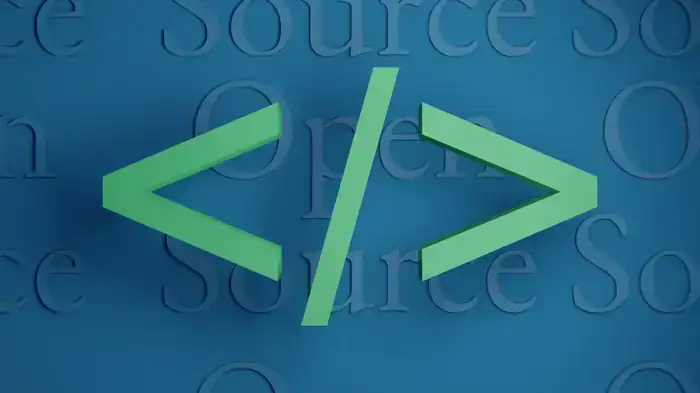
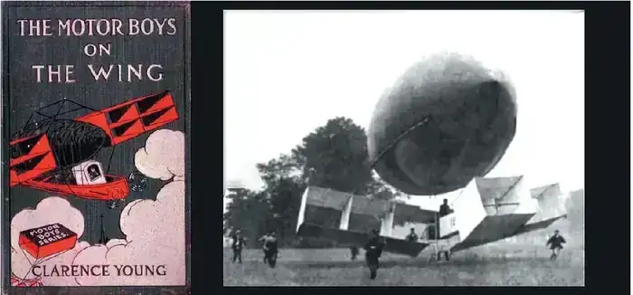
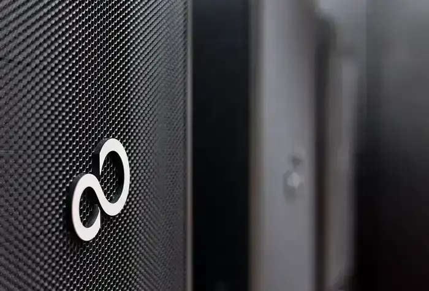

The case for open weights
Scientific audit is the strongest argument. A model whose weights are public can be examined, benchmarked and attacked by anyone; one behind an API can only be probed through a filter the provider controls, and its reported evaluations cannot be independently reproduced.
Maps, diagrams and images






Competition and sovereignty follow. Open weights let universities, small companies and states without frontier compute build on the capability, which is the argument that produced OLMo, Pythia and the Llama releases, and which the EU's AI Act partially accommodates.
Safety research needs the artefacts. Most work on interpretability, unlearning and red-teaming is done on open models precisely because closed ones cannot be studied at the parameter level.
The case against
Fine-tuning removes safety training. Qi and colleagues showed in 2023 that a small amount of adversarial fine-tuning on an aligned model restores harmful capability, and that the effect is cheap and requires no special access to the original training data. You cannot patch a downloaded file.
Capability diffusion is the second argument: the frontier moves fast, and an open release at the frontier is a permanent transfer of a capability to every actor, including ones that will use it for cyber operations or biosecurity. The 'it will be available soon anyway' reply is an empirical claim about lag, and the lag has been short.
The third is the monitoring asymmetry: closed providers can log, rate-limit and revoke. None of those controls survives publication.
Established: safety training is removable by fine-tuning; open weights are irreversible; closed models cannot be independently audited at the parameter level.
Contested: whether open releases accelerate dangerous capability by months or years, and whether the marginal risk exceeds the auditability benefit.
Policy divergence: the EU AI Act imposes obligations on general-purpose models with some accommodation for open source; the US has relied more on voluntary commitments; the UK has taken a research-heavy line. None of these is settled.
The honest framing: this is a trade between concentrated, revocable control and distributed, irreversible access. Neither is obviously safer in the abstract; which is safer depends on which failure you fear.
The archive labels this live debate because both sides' factual claims are largely correct and the disagreement is about values and risk estimates.
Why it is in the archive
Because it is the clearest current example of a policy argument where the empirical premises are shared and the conclusion is not.
Related: algorithmic fairness, AI existential risk.
Sources for this page
- Wikipedia, “Open-weight model” — the release landscape and the argumentsen.wikipedia.org
- Qi et al. (2023), “Fine-tuning Aligned Language Models Compromises Safety”arxiv.org
- Wikipedia, “Regulation of artificial intelligence” — the EU, US and UK approachesen.wikipedia.org
- Wikipedia, “AI safety” — the research context for both positionsen.wikipedia.org
Open resources on this topic
- PapersOpen-access articles: DOAJ · PubMed Central · Internet Archive Scholar
- BooksPublic-domain and borrowable copies: Open Library · Project Gutenberg · Google Books · Internet Archive
Cite this page
Momin, S. (2026). Open versus Closed Models. The Larger World Archive. https://drsamonline.github.io/LARGE_GLOBE/open-vs-closed-models.htmlMomin, Sohil. “Open versus Closed Models.” The Larger World Archive, 2026, https://drsamonline.github.io/LARGE_GLOBE/open-vs-closed-models.html.Momin, Sohil. “Open versus Closed Models.” The Larger World Archive, 2026. https://drsamonline.github.io/LARGE_GLOBE/open-vs-closed-models.html.@misc{open2026open,
author = {Momin, Sohil},
title = {Open versus Closed Models},
year = {2026},
howpublished = {The Larger World Archive},
url = {https://drsamonline.github.io/LARGE_GLOBE/open-vs-closed-models.html},
note = {Last reviewed 20 November 2026}
}Last reviewed 20 November 2026 · Corrections policy · this page is not peer reviewed